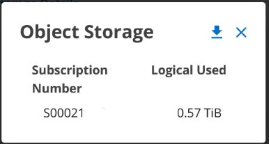
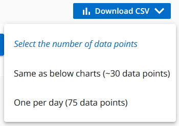

NetApp Keystone Services
NetApp Keystone Services
Digital Advisor Dashboard und Reporting für Keystone
 Änderungen vorschlagen
Änderungen vorschlagen
Über das Digital Advisor Dashboard von Active IQ können Sie die Nutzung Ihrer NetApp Keystone-Abonnements überwachen und Berichte erstellen. Wenn Sie Keystone Services abonnieren, können Sie sich die Details zu Ihrem Abonnement und Ihrer Nutzung im Widget Keystone Abonnements auf dem Digital Advisor Dashboard ansehen.

|
Die hier verfügbaren Informationen gelten sowohl für ONTAP als auch für StorageGRID. Ausnahmen wurden in den entsprechenden Abschnitten erwähnt. |
Weitere Informationen zum Keystone Digital Advisor Widget finden Sie unter "Anzeige der Kapazitätsauslastung mit NetApp Keystone-Abonnement".
So zeigen Sie Ihr Keystone Abonnement sowie die Nutzungsdetails an:
-
Melden Sie sich bei Digital Advisor an. Sie können das Widget Keystone Abonnements sehen, in dem die Kapazitätsnutzung mit den von Ihnen erworbenen Keystone Services verglichen wird.
-
Klicken Sie im Widget Keystone Subscriptions auf Weitere Details anzeigen, um die Nutzungsdetails und Benachrichtigungen zu Ihren Volumes auf der Seite Keystone Subscriptions anzuzeigen. Alternativ dazu können Sie im linken Navigationsfenster auf ALLGEMEIN > Keystone Abonnements klicken.
Die Details zu den Abonnements, Nutzungsdiagrammen für die einzelnen Service-Level und Volume-Details werden auf den verschiedenen Registerkarten auf dem Bildschirm Keystone Abonnements angezeigt.
|
|
Der Kapazitätsverbrauch in Keystone Abonnements wird in TIBS auf den Dashboards und Berichten angezeigt und auf zwei Dezimalstellen abgerundet. Wenn die Nutzung weniger als 0.01 tib beträgt, wird als angezeigt 0 Oder No Usage. Die Daten auf diesen Bildschirmen werden in UTC-Zeit (Serverzeitzone) angezeigt. Wenn Sie ein Datum für die Abfrage eingeben, wird es automatisch als UTC-Zeit betrachtet.
|
Informationen zu Nutzungsmetriken finden Sie unter "Service-Level-Metriken und -Definitionen". Informationen über die verschiedenen in Keystone verwendeten Kapazitäten finden Sie unter "Keystone Service-Kapazitätsdefinitionen".
Abonnements
Eine Liste Ihrer Abonnements können Sie im Register Abonnements einsehen.

Sie können die folgenden Informationen sehen. Für bestimmte Felder und Spalten können Sie Informationen oder Warnsymbole und Tooltips sehen, die Ihnen zusätzliche Informationen zu den Daten bieten.
-
Abonnementnummer: Die Abonnementnummer des von NetApp zugewiesenen Keystone Abonnements.
-
Tracking-ID: Die zum Zeitpunkt der Abonnementaktivierung zugewiesene Tracking-ID. Dies ist eine eindeutige ID für jedes Abonnement und jede Website, die zur Nachverfolgung des Abonnements verwendet wird.

Wenn Ihrem Abonnement ein Datensicherungs-Service Level oder ein Preisplan zugewiesen wurde, hilft Ihnen eine Kurzinformation, die Tracking ID des Partnerabonnements in einem MetroCluster Setup zu identifizieren. Informationen zum Anzeigen der detaillierten Nutzung nach Partnerabonnements in einer MetroCluster Konfiguration finden Sie unter "Referenzdiagramme für den Datenschutz". -
Nutzungstyp: Sie haben möglicherweise mehrere Keystone (Version 1) oder Keystone STaaS (Version 2) Abonnements abonniert. Die Tarifbestimmungen für die Service-Levels können für die beiden Abonnementtypen variieren. Wenn Sie sich den Wert in dieser Spalte ansehen, wissen Sie, ob der Nutzungstyp nach der bereitgestellten oder der logischen Nutzung für eine der beiden abrechnet
v1Oderv2. Weitere Informationen zu Keystone STaaS finden Sie unter "Dokumentation zu Keystone STaaS". -
Abrechnungszeitraum: Der Abrechnungszeitraum des Abonnements, z. B. monatlich, vierteljährlich oder jährlich.
-
Startdatum: Das Startdatum des Abonnements.
-
Enddatum: Das Enddatum des Abonnements. Wenn Sie ein monatlich abrechenbares Abonnement haben, das sich automatisch jeden Monat verlängert, sehen Sie
Month-on-monthAnstelle des Enddatums. Basierend auf diesem Datum werden möglicherweise Informationsmeldungen für Abonnements angezeigt, deren Ablauf kurz bevorsteht oder denen Richtlinien zur automatischen Verlängerung beigefügt sind. -
Nutzungsstatus: Gibt an, wie viel des Abonnements genutzt oder überverwendet wurde. Sie können die Liste nach dieser Spalte sortieren, wenn Sie die höchsten Verbrauchsdatensätze anzeigen möchten.
-
 : Durch Klicken auf dieses Symbol für ein Abonnement wird der Reiter Aktuelle Nutzung mit zusätzlichen Details zu diesem Abonnement geöffnet.
: Durch Klicken auf dieses Symbol für ein Abonnement wird der Reiter Aktuelle Nutzung mit zusätzlichen Details zu diesem Abonnement geöffnet. -
: Wenn Sie auf dieses Symbol klicken, wird die Registerkarte Capacity Trend geöffnet, auf der Sie die historischen Nutzungsdaten für jeden Service-Level sehen können, der in diesem Abonnement enthalten ist.
Sie können die folgenden Nutzungsanzeigen nutzen, um den Nutzungsstatus jedes Abonnements zu überprüfen:

 : Keine Kapazitätsnutzung erfasst mit der Kapazität des Service-Levels
: Keine Kapazitätsnutzung erfasst mit der Kapazität des Service-Levels
 : Der Verbrauch ist normal, innerhalb von 80% der Kapazität verpflichtet
: Der Verbrauch ist normal, innerhalb von 80% der Kapazität verpflichtet
 : Maximaler Verbrauch, das heißt, die Nutzung wird 100% oder mehr der gebuchten Kapazität erreichen. Die Spalte verbraucht zeigt diesen Indikator für einen Verbrauch über 80 % der zugelegten Kapazität an
: Maximaler Verbrauch, das heißt, die Nutzung wird 100% oder mehr der gebuchten Kapazität erreichen. Die Spalte verbraucht zeigt diesen Indikator für einen Verbrauch über 80 % der zugelegten Kapazität an
 : Der Verbrauch liegt innerhalb der Burst-Grenze. Der Burst-Verbrauch liegt bei der Storage-Kapazität, die den zu 100 % festgelegten Kapazitätswert eines Service-Levels übersteigt, und liegt innerhalb der vereinbarten Burst-Nutzungsgrenze, z. B. 120 %
: Der Verbrauch liegt innerhalb der Burst-Grenze. Der Burst-Verbrauch liegt bei der Storage-Kapazität, die den zu 100 % festgelegten Kapazitätswert eines Service-Levels übersteigt, und liegt innerhalb der vereinbarten Burst-Nutzungsgrenze, z. B. 120 %
 : Zeigt den Verbrauch über der festgelegten Burst-Grenze an
: Zeigt den Verbrauch über der festgelegten Burst-Grenze an
Aktuelle Nutzung
Um die Details Ihrer Abonnements zu erfahren, klicken Sie auf die Registerkarte Aktuelle Nutzung und wählen Sie die gewünschte Abonnementnummer aus.

Details wie der Name des Service-Levels, festgelegt, verbraucht, verfügbare Kapazitäten sowie die aktuelle und aufgelaufene Burst-Nutzung werden in tib angezeigt.
|
|
Der |
Weitere Informationen zu Ihren Keystone Storage-Services und den relevanten Service-Leveln finden Sie unter "Service-Leveln".
Kapazitätstrend
Auf der Registerkarte Capacity Trend werden Verlaufsdaten Ihrer Keystone Abonnements für einen bestimmten Zeitraum angezeigt. In den vertikalen Diagrammen werden die Nutzungsdetails für den ausgewählten Zeitbereich mit den entsprechenden Indikatoren angezeigt, mit denen Sie Berichte vergleichen und generieren können.
-
Klicken Sie auf die Registerkarte Capacity Trend.
-
Wählen Sie das erforderliche Abonnement aus, für das Sie die Details anzeigen möchten. Das erste Abonnement Ihres Kontonamens ist standardmäßig ausgewählt.
-
Wählen Sie Kapazitätstrends aus, wenn Sie die historischen Daten anzeigen und den Trend zur Kapazitätsnutzung analysieren möchten. Wählen Sie fakturierte aufgelaufene Burst aus, wenn Sie die historischen Burst-Nutzungsdaten anzeigen möchten, für die Rechnungen erstellt wurden. Mit diesen Daten können Sie die berechnete Nutzung gemäß Ihrer Rechnung analysieren.
Kapazitätstrends anzeigen
Weitere Informationen .
Wenn Sie die Option Kapazitätstrend ausgewählt haben, gehen Sie wie folgt vor:
-
Wählen Sie den Zeitbereich aus den Kalendersymbolen in den Feldern von Datum und bis Datum aus. Wählen Sie den Datumsbereich für die Abfrage aus. Der Datumsbereich kann der Beginn des Monats oder das Startdatum des Abonnements auf das aktuelle Datum oder das Enddatum des Abonnements sein. Sie können kein zukünftiges Datum auswählen.
Um eine optimale Performance und Benutzerfreundlichkeit zu erzielen, begrenzen Sie den Datumsbereich Ihrer Anfrage auf drei Monate. -
Klicken Sie Auf Details Anzeigen. Die historischen Verbrauchsdaten des Abonnements für jedes Servicelevel werden basierend auf dem ausgewählten Zeitbereich angezeigt.
In den Balkendiagrammen werden der Name des Service-Levels und die für diesen Service-Level verbrauchte Kapazität für den Datumsbereich angezeigt. Das Datum und die Uhrzeit der Sammlung werden unten im Diagramm angezeigt. Basierend auf dem Datumsbereich Ihrer Abfrage werden die Nutzungsdiagramme in einem Bereich von 30 Datenerfassungspunkten angezeigt. Sie können den Mauszeiger über die Diagramme halten, um eine Aufschlüsselung der Nutzung in Bezug auf die Daten für „belegt“, „verbraucht“, „Burst“ und darüber des Burst-Limits an diesem Datenerfassungspunkt anzuzeigen.

Die folgenden Farben in den Balkendiagrammen geben die verbrauchte Kapazität an, die innerhalb des Service-Levels definiert ist. Monatliche Daten in den Diagrammen werden durch eine vertikale Linie getrennt.
-
Grün: Innerhalb Von 80 %.
-
Gelb: 80 % - 100 %.
-
Rot: Burst-Nutzung (100 % der festzugesagte Kapazität bis zur vereinbarten Burst-Grenze)
-
Violett: Über der Burst-Grenze oder
Above Limit.
|
|
Ein leeres Diagramm zeigt an, dass an diesem Datenerfassungspunkt in Ihrer Umgebung keine Daten verfügbar waren. |
Sie können auf die Umschalttaste Aktuelle Nutzung anzeigen klicken, um den Verbrauch, die Burst-Nutzung und die anrechnungsmäßigen Burst-Daten für den aktuellen Abrechnungszeitraum anzuzeigen. Diese Angaben basieren nicht auf dem Datumsbereich der Abfrage.
-
Current verbrauchte: Indikator für die verbrauchte Kapazität (in tib), die für das Service-Level definiert ist. Dieses Feld verwendet bestimmte Farben:
-
Keine Farbe: Burst oder mehr Burst-Nutzung.
-
Grau: Keine Verwendung.
-
Grün: Innerhalb von 80% der gebuchten Kapazität.
-
Amber: 80 % der auf die Burst-Kapazität zugesuchten Kapazität.
-
-
Aktueller Burst: Indikator für die verbrauchte Kapazität innerhalb oder oberhalb des definierten Burst-Limits. Jede Nutzung innerhalb der vereinbarten Burst-Grenze, beispielsweise 20 % über der gebuchten Kapazität, erfolgt innerhalb des Burst-Limits. Eine weitere Nutzung wird als Nutzung über dem Burst-Limit betrachtet. Dieses Feld zeigt bestimmte Farben an:
-
Keine Farbe: Keine Burst-Nutzung.
-
Rot: Burst-Nutzung.
-
Lila: Über der Burst-Grenze.
-
-
Aufgelaufener Burst: Indikator für die aufgelaufene Burst-Nutzung oder verbrauchte Kapazität, die pro Monat für den aktuellen Abrechnungszeitraum berechnet wird. Die aufgelaufene Burst-Nutzung wird auf Basis der zurecheneten und verbrauchten Kapazität für ein Service-Level berechnet:
(consumed - committed)/365.25/12.
Anzeigen der angefallenen Burst-Rechnung
Weitere Informationen .
Wenn Sie die Option fakturierte aufgelaufene Burst ausgewählt haben, sehen Sie standardmäßig die monatlich aufgelaufenen Burst-Nutzungsdaten der letzten 12 Monate, die in Rechnung gestellt wurden. Sie können die Abfrage nach dem Datumsbereich der letzten 30 Monate durchführen. Balkendiagramme werden für die Rechnungsdaten angezeigt. Wenn die Nutzung noch nicht in Rechnung gestellt wurde, wird für diesen Monat „Pending“ angezeigt.
|
|
Die in Rechnung gestellte Burst-Nutzung wird pro Abrechnungszeitraum berechnet, basierend auf der gebuchten und verbrauchten Kapazität für ein Service-Level. |

Diese Funktion ist nur im Vorschaumodus verfügbar. Wenden Sie sich an Ihren KSM, um mehr über diese Funktion zu erfahren.
Referenzdiagramme für den Datenschutz
Weitere Informationen .
Wenn Sie den Datenschutzdienst abonniert haben, können Sie die Aufschlüsselungsdaten für die MetroCluster-Partnerseiten auf der Registerkarte Kapazitätstrend einsehen.
Informationen zum Datenschutz finden Sie unter "Datensicherung".
Wenn die Cluster in Ihrer ONTAP Storage-Umgebung in einem MetroCluster-Setup konfiguriert sind, werden die Nutzungsdaten Ihres Keystone Abonnements in dasselbe historische Datendiagramm aufgeteilt, um den Verbrauch an den primären und gespiegelten Standorten für die Basis-Service-Level anzuzeigen.
|
|
Die Verbrauchsbalkentabellen sind nur für grundlegende Servicelevel aufgeteilt. Für Service-Level im Bereich Datensicherheit erscheint diese Abgrenzung nicht. |
Bei Service-Levels für die Datensicherung wird der Gesamtverbrauch zwischen den Partnerstandorten aufgeteilt. Die Nutzung an jedem Partner-Standort wird in einem separaten Abonnement abgerechnet, das ein Abonnement für den primären Standort und ein weiteres für den gespiegelten Standort darstellt. Wenn Sie daher die Abonnementnummer für den primären Standort auf der Registerkarte Kapazitätstrend auswählen, werden in den Verbrauchsdiagrammen für die DP-Service-Level die Details zum diskreten Verbrauch nur für den primären Standort angezeigt. Da jeder Partnerstandort in einer MetroCluster Konfiguration als Quelle und Spiegel fungiert, umfasst der Gesamtverbrauch an jedem Standort die Quell- und Spiegelvolumes, die am Standort erstellt wurden.
|
|
Die QuickInfo neben der Tacking-ID Ihres Abonnements auf der Registerkarte Aktuelle Nutzung hilft Ihnen, das Partnerabonnement im MetroCluster-Setup zu identifizieren. |
Für die Basis-Service-Level werden alle Volumes gemäß der Bereitstellung am primären Standort und an den gespiegelten Standorten abgerechnet. Daher wird dasselbe Balkendiagramm nach dem Verbrauch am primären Standort und an den gespiegelten Standorten aufgeteilt.
Das folgende Bild zeigt die Diagramme für den Service-Level Extreme (Basis-Service-Level) und eine primäre Abonnementnummer. Das gleiche historische Datendiagramm markiert den Verbrauch der Spiegelseite in einem helleren Farbton des Farbcodes, der für den primären Standort verwendet wird. Über die Kurzinformation beim Mauszeiger wird die Verbrauchsaufschlüsselung (in tib) für die primären und gespiegelten Standorte mit 1.02 tib bzw. 1.05 tib angezeigt.

Für den Data-Protect Extreme Service Level (Data Protection Service Level) erscheinen die Diagramme wie folgt:

Wenn Sie das sekundäre Abonnement prüfen, wird das Balkendiagramm für den Service-Level Extreme (Basis-Service-Level) am gleichen Datenerfassungspunkt wie der Partner-Standort umgekehrt und die Verbrauchsaufschlüsselung am primären und gespiegelten Standort beträgt 1.05 tib bzw. 1.02 tib.

Für den Service-Level Data-Protect Extreme (Service-Level Datenschutz) erscheint das Diagramm am selben Erfassungspunkt wie die Partnerseite:

Informationen zum Schutz Ihrer Daten durch MetroCluster finden Sie unter "MetroCluster Datensicherung und Disaster Recovery verstehen".
Volumes Und Objekte
Auf der Registerkarte Volumes & Objekte können Sie den Verbrauch und andere Details für Ihre Volumes in ONTAP anzeigen. Bei StorageGRID werden auf dieser Registerkarte die Nodes und ihre individuelle Nutzung in Ihrer Objekt-Storage-Umgebung angezeigt.
|
|
Der Name dieser Registerkarte hängt von der Art der Bereitstellung an Ihrem Standort ab. Wenn Sie sowohl Volumes als auch Objektspeicher haben, können Sie die Registerkarte Volumes & Objekte sehen. Wenn Sie nur Volumes in Ihrer Speicherumgebung haben, ändert sich der Name in Volumes. Nur für Objektspeicher können Sie die Registerkarte Objects sehen. |
Zeigen Sie Details zum ONTAP Volume an
Weitere Informationen .
Für ONTAP werden auf der Registerkarte Volumes Informationen angezeigt, beispielsweise die Kapazitätsauslastung, der Volume-Typ, das Cluster, das Aggregat und das Service-Level der Volumes in Ihrer durch das Keystone Abonnement verwalteten Storage-Umgebung.
-
Klicken Sie auf die Registerkarte Volumes.
-
Wählen Sie die Abonnementnummer aus. Standardmäßig ist die erste verfügbare Abonnementnummer ausgewählt.
Die Volume-Details werden angezeigt. Sie können durch die Spalten blättern und mehr darüber erfahren, indem Sie den Mauszeiger auf die Informationssymbole neben den Spaltenüberschriften bewegen. Sie können nach den Spalten sortieren und die Listen filtern, um bestimmte Informationen anzuzeigen.
Bei Datensicherungsdiensten wird eine zusätzliche Spalte angezeigt, die angibt, ob es sich um ein primäres oder ein gespiegeltes Volume in der MetroCluster-Konfiguration handelt. Sie können einzelne Seriennummern der Knoten kopieren, indem Sie auf die Schaltfläche Node Serials kopieren klicken.

StorageGRID Nodes und Verbrauch anzeigen
Weitere Informationen .
Bei StorageGRID zeigt diese Registerkarte die logische Nutzung der Nodes für den Objektspeicher an.
-
Klicken Sie auf die Registerkarte Objects.
-
Wählen Sie die Abonnementnummer aus. Standardmäßig ist die erste verfügbare Abonnementnummer ausgewählt. Bei Auswahl der Abonnementnummer wird der Link für Details zum Objekt-Storage aktiviert.

-
Klicken Sie auf den Link, um die Knotennamen und Details zur logischen Nutzung für jeden Node anzuzeigen.

Leistung
Auf der Registerkarte Performance können Sie die Performance-Kennzahlen der ONTAP Volumes anzeigen, die von Ihren Keystone Abonnements gemanagt werden.
|
|
Diese Registerkarte ist optional für Sie verfügbar. Wenden Sie sich an den Support, um diese Registerkarte anzuzeigen. |
-
Klicken Sie auf die Registerkarte Performance.
-
Wählen Sie die Abonnementnummer aus. Standardmäßig ist die erste Abonnementnummer ausgewählt.
-
Wählen Sie den gewünschten Volume-Namen aus der Liste aus.
Alternativ können Sie auf klicken Symbol gegen ein ONTAP-Volume in der Registerkarte Volumes, um zu dieser Registerkarte zu navigieren.
-
Wählen Sie den Datumsbereich für die Abfrage aus. Der Datumsbereich kann der Beginn des Monats oder das Startdatum des Abonnements auf das aktuelle Datum oder das Enddatum des Abonnements sein. Sie können kein zukünftiges Datum auswählen.
Die abgerufenen Details basieren auf dem Service-Level-Ziel für jeden Service-Level. So werden beispielsweise die IOPS-Spitzenwerte, der maximale Durchsatz, die Ziellatenz und andere Metriken durch die einzelnen Einstellungen für das Service-Level bestimmt. Weitere Informationen zu den Einstellungen finden Sie unter "Service-Leveln".
|
|
Wenn Sie das Kontrollkästchen SLO Reference Line aktivieren, werden die Diagramme IOPS, Durchsatz und Latenz auf Basis des Service-Level-Ziels für den Service-Level dargestellt. Andernfalls werden sie in tatsächlichen Zahlen angezeigt. |
Die im horizontalen Diagramm angezeigten Leistungsdaten sind ein Durchschnitt in jedem fünfminütigen Intervall und entsprechend dem Datumsbereich der Abfrage angeordnet. Sie können durch die Diagramme blättern und mit der Maus über bestimmte Datenpunkte fahren, um weiter unten in die erfassten Daten zu gelangen.
Sie können die Leistungsmetriken in den folgenden Abschnitten basierend auf der Kombination aus Abonnementnummer, Volumenname und ausgewähltem Datumsbereich anzeigen und vergleichen. Die Details werden nach dem dem dem Volume zugewiesenen Service-Level angezeigt. Sie können den Cluster-Namen und den Volume-Typ sehen, d. h. die dem Volume zugewiesenen Lese- und Schreibberechtigungen. Jede mit dem Volume verknüpfte Warnmeldung wird ebenfalls angezeigt.
IOPS/tib
In diesem Abschnitt werden die Input-Output-Diagramme für die Workloads im Volume basierend auf dem Datumsbereich der Abfrage angezeigt. Die Spitzenwerte-IOPS für das Service-Level und die aktuellen IOPS (in den letzten fünf Minuten, nicht basierend auf dem Datumsbereich der Abfrage) werden zusammen mit den minimalen, maximalen und durchschnittlichen IOPS für den Zeitraum in IOPS/tib angezeigt.

Durchsatz (MB/s/tib)
In diesem Abschnitt werden die Durchsatzdiagramme für die Workloads im Volume basierend auf dem Datumsbereich der Abfrage angezeigt. Der maximale Durchsatz für das Service-Level (SLO Max) und den aktuellen Durchsatz (in den letzten fünf Minuten, nicht basierend auf dem Datumsbereich der Abfrage) werden zusammen mit dem minimalen, maximalen und durchschnittlichen Durchsatz für den Zeitbereich in MBit/s/tib angezeigt.

Latenz (ms)
In diesem Abschnitt werden die Latenzdiagramme für die Workloads im Volume angezeigt, basierend auf dem Datumsbereich der Abfrage. Die maximale Latenz für das Service-Level (SLO-Ziel) und die aktuelle Latenz (in den letzten fünf Minuten, nicht basierend auf dem Datumsbereich der Abfrage) werden zusammen mit der minimalen, maximalen und durchschnittlichen Latenz für den Zeitraum in Millisekunden angezeigt.
Dieses Diagramm hat die folgenden Farben:
-
Hellblau: Latency. Bei dieser Latenz handelt es sich um die tatsächliche Latenz, die neben dem Keystone-Service auch Latenzen einschließt. Dazu kann auch eine zusätzliche Latenz gehören, beispielsweise die Latenz zwischen Netzwerk und Client.
-
Dunkelblau: Effektive Latenz. Die effektive Latenz ist die Latenz, die sich ausschließlich auf Ihren Keystone Service in Bezug auf Ihr SLA richtet.

Genutzte logische Nutzung (tib)
In diesem Abschnitt werden die bereitgestellten und die logischen genutzten Kapazitäten des Volumes angezeigt. Die aktuell genutzte logische Kapazität (in den letzten fünf Minuten, nicht basierend auf dem Datumsbereich der Abfrage) sowie die minimale, maximale und durchschnittliche Nutzung des Zeitbereichs werden in TIBS angezeigt. In diesem Diagramm steht der graue Bereich für die gebuchte Kapazität und das gelbe Diagramm für die logische Nutzung.

Berichte generieren
Sie können Berichte für Ihre Abonnementdetails, Nutzungsdaten für einen bestimmten Zeitraum und Volume-Details von jedem der Registerkarten erstellen und anzeigen, indem Sie auf die Schaltfläche CSV herunterladen klicken: 
Die Details werden im CSV-Format erstellt, das Sie zur späteren Verwendung speichern können.
Auf der Registerkarte Capacity Trend haben Sie die Möglichkeit, den Bericht für die standardmäßigen 30 Datenerfassungspunkte des Datumsbereichs Ihrer Abfrage oder Tagesberichte herunterzuladen.

Ein Beispielbericht für die Registerkarte Capacity Trend, in der die grafischen Daten konvertiert werden:

Anzeigen von Meldungen
Warnungen auf der Konsole senden Warnhinweise, mit denen Sie die in Ihrer Storage-Umgebung auftretenden Probleme verstehen.
Es gibt zwei Arten von Warnmeldungen:
-
Information: Für Probleme, wie Ihre Abonnements, die sich einem Ende nähern, können Sie Informationswarnungen sehen. Bewegen Sie den Mauszeiger über das Informationssymbol, um mehr über das Problem zu erfahren.
-
Warnung: Probleme, wie z. B. Nichteinhaltung, werden als Warnungen angezeigt. Wenn beispielsweise Volumes in den gemanagten Clustern ohne über AQoS-Richtlinien (Adaptive QoS) verbunden sind, wird eine Warnmeldung angezeigt. Sie können auf den Link in der Warnmeldung klicken, um die Liste der nicht kompatiblen Volumes auf der Registerkarte Volumes anzuzeigen.
Wenn Sie einen einzelnen Service-Level- oder Tarifplan abonniert haben, können Sie die Warnmeldung für nicht konforme Volumes nicht sehen. Informationen zu AQoS-Richtlinien finden Sie unter "Abrechnung und anpassungsfähige QoS-Richtlinien".

Wenden Sie sich an den NetApp Support, um weitere Informationen zu diesen Warn- und Warnungsmeldungen zu erhalten.